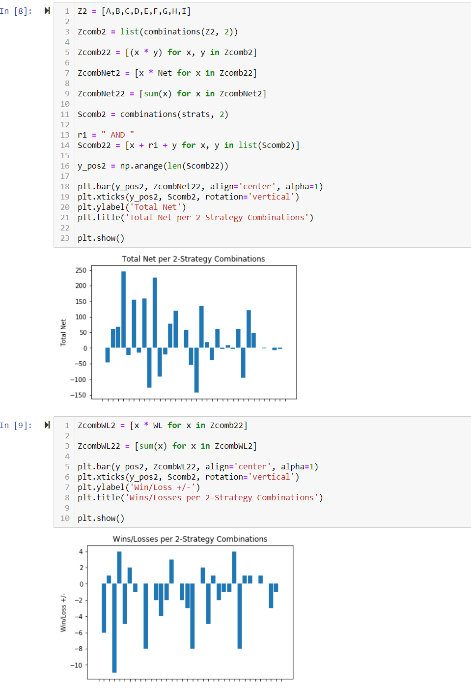

Financial Trading Advisor
Fish is an analytical tool designed to assist traders looking to understand what strategies are more reliable and what things to eliminate from their process.
It is actually designed to be a featured tool in a course I am going to launch. The course subject will be intra-day and short-term foreign currency trading, and Fish will help each of the students track their rookie performance!
The students would fill out the workbook, go online to the site, and upload their workbook. Then, Fish will crunch their journal data and spit out the results in similar fashion below:
Programs Used: